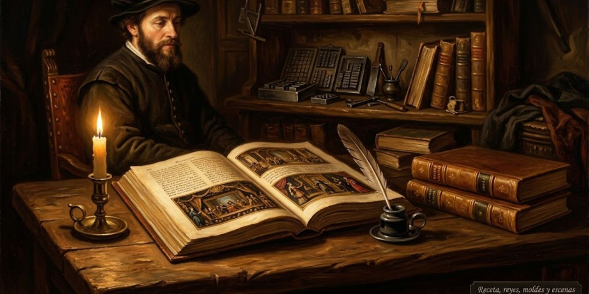

17 de octubre de 2026
Receta, reyes, moldes y escenas

El día amaneció con fuentes abiertas: antes de opinar sobre maestros, la casa bajó a verificar lo que cada uno dijo, porque la memoria ya ha perdido suficientes partidas. El ánimo anduvo de taller fino, con gusto a libro nuevo.
Después vino la coronación: la receta quedó fijada y escrita de principio a fin en un solo lugar de la sala de máquinas, fundiendo al viejo procedimiento en una sola página. Su ley es breve: el diez por ciento de las frases más señaladas por el medidor, elegidas con criterio y sin azar, cada una con su glosa que la explica al invitado. Con ella, la tragedia del rey se publicó entera, escena por escena, las veintiséis, con su presentación limada hasta quedar sin cifras ni adornos.
El molde del rey también quedó completo: la traducción de la casa se unió a la fuente frase por frase, las carpetas viejas fueron al fuego y la papelera quedó vacía. Y la regla de oro se repitió una vez más: la fuente es la fuente, y no se toca.
La nube del rey aprendió trucos nuevos: habla en dos idiomas a la vez, ganó una tercera navegación hacia su propio centro, y sus filas se llaman ahora con nombres cortos que miden lo mismo. El código quedó saneado para servir a cualquier libro, no solo al que la vio nacer.
Y la receta no se quedó quieta: dos libros nuevos entraron al horno por la misma puerta —uno de oficio, sobre escribir, y otro de larga vida—, y la obra escocesa volvió a empezar desde cero, ya no en ocho frases sino escena por escena, con sus grabados esperando turno en la cola del horno de dibujos. Una sola máquina para todos los libros: eso celebró la casa al cerrar.
© 2026 Osmancito
Parte del día: la receta fijada en la sala de máquinas, el rey completo en veintiséis escenas, dos libros nuevos en el horno y la obra escocesa empezada de cero. Lectura en curso: El Libro de Arena, de Borges. En la copa: una bebida de recetas.